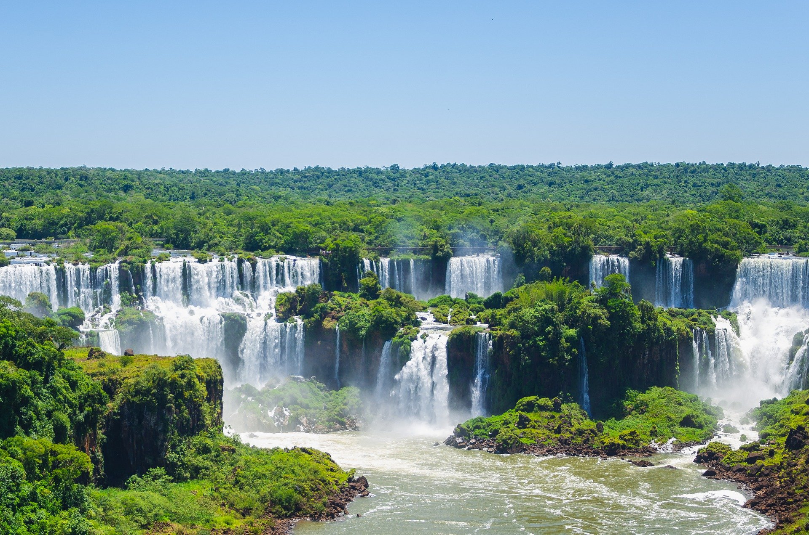

Santa Cruz
.jpg)
Buenos Aires
Santa Cruz
.JPG)
Mendoza
Santa Cruz

San Luis
Santa Cruz

Jujuy
Santa Cruz

Salta
Santa Cruz
Misiones
Santa Cruz

Entre Rios
Santa Cruz

Santa Cruz
Santa Cruz

Rio Negro
Santa Cruz

Tierra del Fuego
- Vuelos a Buenos Aires
- Vuelos a Mendoza
- Vuelos a Jujuy
- Vuelos a Puerto Iguazu
- Vuelos a Bariloche
- Micro a Bariloche
- Micro a Buenos Aires
- Micro a Cordoba
- Micro a Mendoza
- Micro a EntreRios
- Alojamiento en Buenos Aires
- Alojamiento en las Termas
- Alojamiento en Mendoza
- Alojamiento en Jujuy
- Alojamiento en Rosario
- Alojamiento en Cordoba
- Alojamiento en San Martin de los Andes
- Gastronomia en el Noroeste
- Gastronomia en la Patagonia
- Gastronomia en Mendoza
- Gastronomia Buenos Aires
- Gastronomia en el Litoral
- Gastronomia Regional Noroeste
- Circuitos Turisticos en Buenos Aires
- Circuitos Turisticos Viñedos Mendoza
- Circuitos Turisticos Cataratas - Iguazu
- Circuitos Turistico Patagonico
- Circuito Turistico Ushuaia
- Circuitos Turistico Sierras de Cordoba
- Pagina Oficial Ministerio de Turismo
- Pagina Oficial Turismo Argentina
- Pagina Oficial Patagonia
- Pagina Oficial Turismo Cuyo
- Pagina Oficial de Turismo Norte
- Pagina Oficial Turismo Cataratas
- Pagina Oficial Termas
- Transporte Terrestre
- Transporte Aereo
- Alquiler de Auto
- Hoteles